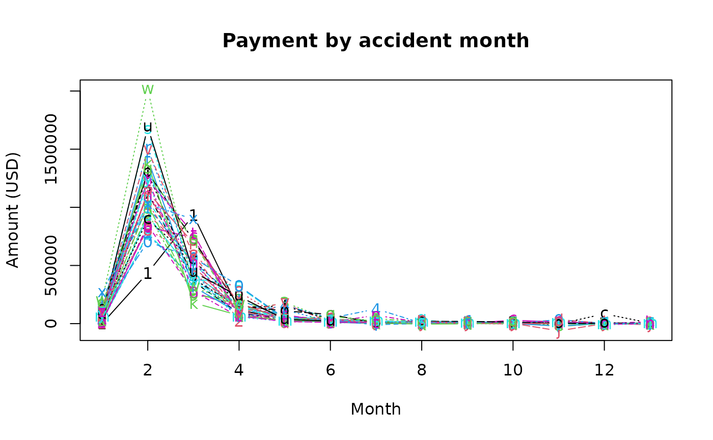

US Medical claim incremental triangles
usmedclaim.RdThis dataset comes from Gamage et al. (2007) and contains medical-care payements by month between January 2001 and December 2003. Payments for medical-care coverage come from policies with no deductible or coinsurance. For a given month and a development year, payments are aggregated among members but are cumulated over development year. The payments exclude prescription drugs that typically have a shorter payment pattern than other medical claims.
Usage
data(usmedclaim)Format
usmedclaim is a matrix containing two columns (with members count
and month) and the insurance triangle.
References
Frees (2010), Regression modelling with actuarial and financial applications, Cambridge University Press, doi:10.1017/CBO9780511814372 .
Gamage, J., Linfield, J., Ostaszewski, K. and S. Siegel (2007). Statistical methods for health actuaries - IBNR estimates: An introduction, Society of Actuaries Working Paper, Schaumburg, Illinois.
Examples
# (1) load of data
#
data(usmedclaim)
head(usmedclaim, 10)
#> members month DY1 DY2 DY3 DY4 DY5 DY6 DY7 DY8
#> 2001-Jan 11154 1 180 436082 933353 116978 42681 41459 5088 22566
#> 2001-Feb 11118 2 5162 940722 561967 21694 171659 11008 19088 5213
#> 2001-Mar 11070 3 42263 844293 720302 94634 182077 32216 12937 22815
#> 2001-Apr 11069 4 20781 762302 394625 78043 157950 46173 126254 4839
#> 2001-May 11130 5 20346 772404 392330 315888 39197 21360 8721 5452
#> 2001-Jun 11174 6 20491 831793 738087 65526 27768 12185 1493 11265
#> 2001-Jul 11180 7 37954 1126675 360514 89317 40126 16576 16701 2444
#> 2001-Aug 11420 8 138558 806362 589304 273117 36912 16831 19941 13310
#> 2001-Sep 11400 9 28332 954543 246571 205528 60060 15198 42208 17568
#> 2001-Oct 11456 10 104160 704796 565939 323789 45307 32518 26227 7976
#> DY9 DY10 DY11 DY12 DY13
#> 2001-Jan 4751 3281 -188 1464 1697
#> 2001-Feb 4337 7844 2973 4061 10236
#> 2001-Mar 1754 4695 1326 758 2177
#> 2001-Apr 337 1573 9573 1947 5937
#> 2001-May 16627 2118 4119 5666 -1977
#> 2001-Jun 1805 29278 13020 2967 -83
#> 2001-Jul 8266 11310 8006 1403 3124
#> 2001-Aug 8619 4679 3094 4609 236
#> 2001-Sep 1686 9897 3367 2062 421
#> 2001-Oct 3364 992 33963 2200 1293
# (2) graph of data
#
matplot(t(as.matrix(usmedclaim[,-(1:2)])), type="b", main="Payment by accident month",
xlab="Month", ylab="Amount (USD)")
